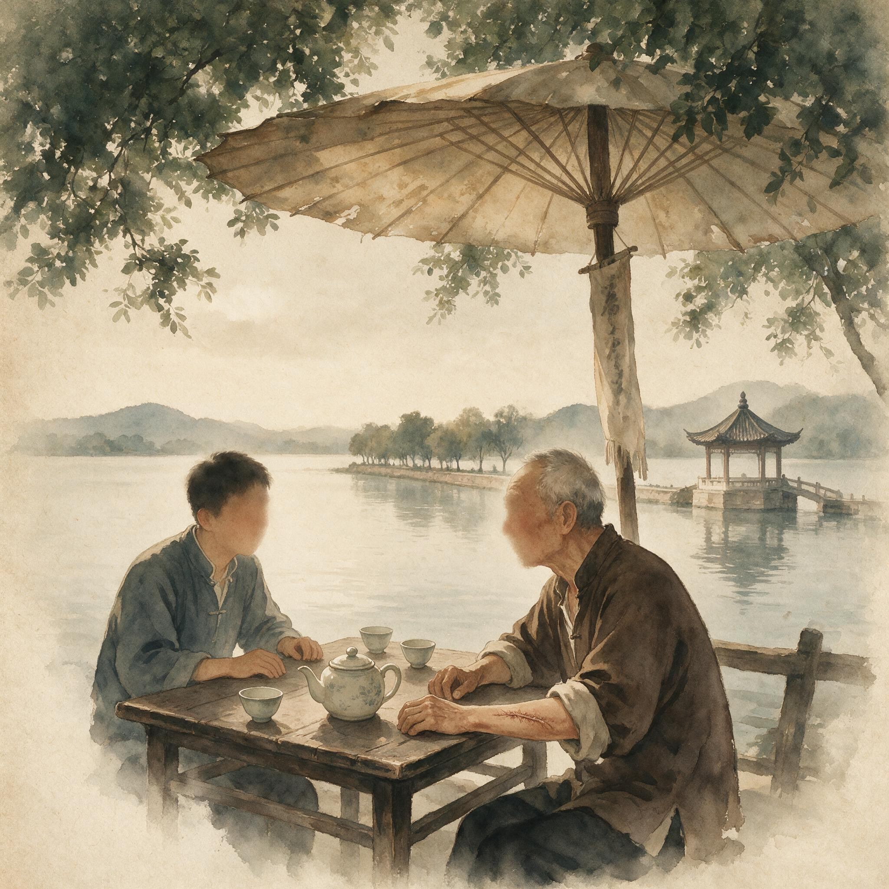

第 30 章
归途无岸的历史回望
又行进了约两个月，部队于7月25日才到达印度边境城镇利多，仅剩下2000多人。出发时的番号还在，但已经只剩下一个空壳。走在队列里的人，鞋子早就磨穿了，脚掌上的血痂摞着血痂。枪还背着，但子弹袋里塞的是树叶。有人背着死去的同袍的绑腿带，那是唯一还能携带的东西。兰姆伽整训的操场后来铺得整整齐齐，兰姆伽的口粮账本每一笔都记到盎司，但走进印度的这条路，是人用脚掌一步一步从泥里量出来的。
同一年夏天，重庆的会议室里，风扇转着，参谋长联席会议的中美官员围坐在长桌两侧。史迪威的备忘录已经译成中文，收复缅甸的方案摊开在桌上：中国驻印军从印度向东推进，中国远征军从云南向西渡江，南北对进，把滇缅公路重新打通。在场的中国军官没有人反对这个方案的方向。
但在方案通过之后，中方提出了书面条件——为了确保反攻缅甸战役的胜利，美国至少应派出一师以上的战斗部队到达印度与中国驻印军联合作战，并在中国战场投入五百架作战飞机，同时还应使空运的援华物资提高到每月五千吨的水平。一师以上。
五百架。五千吨。这三个数字不是军人随手写下的，是算出来的。算的依据是什么？依据是第一次入缅作战的损失账：没有足够的空中掩护，远征军在日军飞机的扫射下暴露行军；没有联合战斗部队，中国军队在多国指挥体系里永远只能充当配属角色；
空运物资不足，前线士兵的口粮从出发时就不足额，弹药也是打完就没了。这些账，是用野人山那数万条命结算出来的。现在，谈判桌上的人把这些账重新打开，把里面的数字一条一条翻译成新的要价。谈判桌和丛林之间隔了几千公里。但没有桌前的条件，丛林里的命就还会继续往泥里沉。

翠湖茶摊老人展示手臂旧伤
AI 生成插图，非史实影像。
远征军的历史悲剧最终不是一场战争的失败，而是一种结构性困境的极端呈现——中国以人力换取国际地位的战略交易，在缅甸战场上被推到极限，而战后数十年间对远征军幸存者的系统性遗忘，则是这场交易最冷酷的结算单。要理解这个判断，必须先回头看清那场交易本身是怎么谈成的。
1942年，中国在盟军体系里的位置是确定的：它拥有兵员。日本陆军主力深陷中国战场，牵制了日军大量地面部队，这个事实让中国在美英的全球战略中获得了不可替代的位置。
但兵员只是战略资源的一种形式。中国自己生产不了足够的钢、油、飞机发动机和无线电设备。滇缅公路被切断之后，连最基本的外援通道都被掐断了。
一个拥有巨量兵员的国家，却无法独立将这些兵员武装成能够进行现代战争的军队。这就是中国与美英之间交易的基本前提：中国出人，盟国出装备、训练和后勤。这个交易在纸面上是合理的。双方各取所需。史迪威的任务说得很清楚——保证盟军对中国的关注和支持。
他的职责不是替中国人打仗，而是让中国军队能够更有效地拖住日军，减轻太平洋战场的压力。从这个角度看，他要求掌握驻印军的指挥权、推动兰姆伽整训、坚持通过驼峰航线把物资运进中国，逻辑上都是自洽的。
但自洽不等于公平。交易的要害隐藏在防区划分表、物资分配额度和作战序列的细节里。中国军队在缅甸战场上的指挥权从一开始就是分裂的——英国人指挥一部分，美国人通过史迪威指挥另一部分，重庆的最高统帅部有时能直接下令，有时命令走到半路就被截住了。到一个团的尺度上，出现的情况可能是：团长同时接到三套互相矛盾的指令，一套来自远征军长官部，一套来自盟军战区参谋部，一套来自重庆侍从室。他必须在战场上自己判断听谁的。判断错了，轻则贻误战机，重则全团覆没。
这种分裂不是某一个人的恶意导致的。它是中国在国际体系中的地位的结构性产物。中国是四强之一，在开罗会议上和罗斯福、丘吉尔坐在一起。但这个四强席位是靠人力换来的，不是靠工业能力和军事投射能力挣来的。
当你的人力和你的装备分属不同的来源，你的指挥权就天然不会是完整的。每一个中国士兵在境外战场上的行动，都受到一套他完全看不见的决策链条的牵引——那条链条的一头在加尔各答的港口调度室里，另一头在华盛顿的参谋长联席会议里，中间经过伦敦、开罗和昆明。链条上的任何一个节点改变优先级，前线士兵就可能在某一天早上发现，说好的炮火支援没有来，说好的空投补给被取消了。
这就是“体系缺失”的第一层意思。它不是说中国军队毫无组织，而是说中国军队的组织能力在上层被截断了。连长可以管好一个连，团长可以管好一个团，但再往上，支撑这支军队作战的后勤、通讯、火力、医疗，几乎全部依赖外部输入。这种情况在某些特定条件下可以打出漂亮的仗——比如驻印军在密支那，因为当时当地的补给线已经被美军工程部队硬生生修通了。
但在更普遍的战场环境里，体系的断裂就意味着士兵必须用自己的身体去补偿缺口。野人山是这种补偿最极端的形态。没有空中侦察，没有无线电联络，没有足够的药品和干粮。
一个师的编制在路上被拆散成若干股各自求生的队伍。活着走到利多的两千多人，每一个人都是靠自己的身体把那段路量完的。他们不是战斗减员，是被体系缺口吞掉的。同样的结构在战后的几十年里以另一种方式持续运转。1945年抗战胜利，远征军完成历史使命。
但胜利的那一刻，也是交易完成的那一刻。中国用人力换来的国际地位，随着战争结束而迅速贬值。美苏冷战格局把中国的战略价值重新定义了一遍。远征军的作战经验、战斗力积累、在境外培养的军官团，这些本来可以作为中国军事现代化的基础，却被国共内战迅速消耗掉了。驻印军被拆分、改编，投入到东北和华北的战场上。
兰姆伽的整训模式，需要大量外援物资和外国顾问，在内战条件下根本无法维系。士兵们用身体学会的步炮协同和空地配合，在重新回到人力替代技术的战争方式之后，很快就生疏了。到了1950年代，远征军的滞留人员面对的是一个更加冷酷的现实。新中国已经成立，台湾方面退守海岛。
印度支那的殖民战争和民族独立运动交替进行，东南亚各国的边界正在重新划定。那些在1942年或1944年脱离原建制、流散在缅泰老越的中国士兵，忽然发现自己已经没有一个可以合法回归的国家。他们中有人试图从泰缅边境走回云南，被边境哨卡拦住——不是被武力拦住，是被身份审查拦住。
他没有部队番号证明，没有复员文件，没有任何一个现行政府出具的身份证件。他是中国远征军士兵，这是一个历史事实，但不是一个法律身份。这就是“归途三叠”中的第二重——政治身份的归途——完成闭合的时刻。地理上，西藏、云南、缅甸、泰国之间的山路是通的。
但每一个关卡都变成了一堵墙。这堵墙不是石头砌的，是表格和档案砌的。法军在红河三角洲修筑德拉特尔防线的同一年，滞留在越北的远征军老兵正在想办法弄到一张外侨登记证。法国人修防线是为了挡住越盟和中国可能发动的入侵，中国老兵申请外侨证是为了不被当作非法入境者驱逐。两个目的大相径庭，却在同一片土地上相交。
老兵们不懂法语，也不知道什么防线，他们只知道如果不弄到一张纸，他们就连在异国继续躲藏的资格都没有。为什么一定要继续躲藏？因为公开露面可能招来更糟的后果。
1950年代的东南亚，华人的政治身份极其敏感。一些国家担心华人充当新中国的第五纵队，另一些国家则担心华人社区与台湾方面有联系。远征军老兵不管立场如何，他们共同的履历是在国民政府军队中服过役。这个履历在有些地方可能被当作政治资本，在更多地方只会被当作麻烦。
于是沉默就成了最好的自保策略。不谈论过去，不提及部队番号，不承认参加过任何军事行动。他们在泰缅边境的小镇里变成了从事苦力、小买卖或农业劳动的普通人。马老四在泰缅边境教当地孩子认字的时候，从来不提自己是从哪里来的。他教的是极其基础的中文，念的是几百年前的老课文，与政治毫无关系。但他选择教书这件事本身，已经是一种最低限度的坚持——他要把自己还能记住的东西传下去，哪怕接受者是别人的孩子。
刘德明在缅甸申请外侨登记证，表格上需要填写出生地和入境日期。他填了云南，入境日期写了1944年。审核的官员看了一眼，问他为什么1944年来缅甸。他说跟着部队来的。什么部队？他顿了一下，回答说不记得番号了。不记得番号了。这句话是一个老兵对自己历史最深沉的埋葬。他当然记得番号，记得连长的名字，记得团部曾经驻扎过的那条街。
但说出来，表格就要重新填，问题就要继续往下问。他不能让自己被问到那个他无法回答的问题：为什么战后不回国？他回不去国，是因为国变了。这个“变”不是他造成的，却由他来承担全部后果。这就把追问推到了制度根源。一个国家的政权更迭，导致曾经为这个国家出征的士兵失去身份归属。
这种事情在二十世纪的世界史上并不罕见。但罕见的是，这些士兵消失得如此彻底，以至于到了1960年代、1970年代，连关于他们的最低限度的公共讨论都不存在。在台湾，官方纪念远征军是有选择性的——孙立人被长期软禁，他带出来的部队的功绩也随之被压低处理。
在大陆，远征军长期被归入“国民党军队”的范畴，相关的历史叙述受到严格控制。在东南亚，他们只是当地华人社区中的一个沉默群体，没有任何政治话语权。三重阻力叠加，远征军的集体记忆就被封存在了历史的夹层里。
幸存者之间的口头传递从未中断，但这些传递无法进入公共领域。偶尔有研究者试图挖掘这段历史，要么因为档案不全，要么因为政治敏感而无法推进。远征军士兵的存在，变成了一个众人都知道但众人都无法公开谈论的话题。
这就是沉默契约的实质。它不是某一天由某个人宣布签署的，而是在漫长的岁月中，由两岸的政治对峙、东南亚的国家建构和国际冷战格局共同浇筑而成的。没有人下令遗忘远征军，但让远征军的记忆进入公共空间所要付出的政治成本，高到了没有人愿意承担的程度。他们的命运，是交易清盘时被自动抹掉的那一行数字。2003年，赵大……
这些迟来的证词，是在沉默契约的约束力因老兵的离去而减弱之后才浮出水面的。活着的证人越来越少，政治审查的压力在某些领域有所松动，此前无法查阅的档案逐渐开放。这些条件加在一起，才使远征军的历史在最近二十年里得到了比过去公开得多的讨论。
但这种讨论仍然是不完整的。它更多集中在战役本身——松山怎么打，密支那怎么攻，驻印军怎么反攻——而较少追问那些战役之后的事情。较少追问士兵们后来的命运，较少追问战后遣返为何如此低效，较少追问滞留人员的身份困境。这不是偶然的。
战役史有一个好处：它可以在不触碰政治敏感性的前提下，呈现中国士兵的英勇和牺牲。胜仗可以讲，败仗也可以讲，只要把焦点放在战术、指挥和士兵表现上，就可以做到相对客观。但一旦把镜头从战场移到后方，从1940年代移到1950年代、1960年代，问题立刻就变复杂了。
富国岛的滞留营、泰缅边境的无岸岁月、两岸档案里那些无法对证的名单，这些题材天然地要求书写者回答一个尖锐的问题：为什么胜利之后，士兵们的归途消失了？要回答这个问题，就必须回到全书一直在追问的那个核心矛盾：盟军战略需求与中国主权诉求的张力，战场荣耀与战后遗忘的反差，士兵天赋与体系缺陷的撕裂。这三组矛盾不是并列的，而是有因果顺序的。
体系缺陷导致了指挥权的让渡，指挥权让渡导致了战后结算权旁落，结算权旁落导致了士兵的归途被遗忘。这条因果链从1941年滇缅路危机开始，一直延伸到1950年代滞留印缅老兵归国无门，中间的所有节点都被同一根线穿着。
有人会提出一个强有力的反方解释：远征军是成功的军事现代化跳板。兰姆伽整训让中国军官第一次系统地接触到现代陆军的管理和训练方式。驻印军和远征军的作战经验，在后来的不同历史阶段中被吸收和借鉴。那些牺牲，是落后的农业国家走向现代化必须付出的入场费。
这个解释的吸引人之处在于，它把远征军的牺牲放进了一个有意义的历史进程之中。现代化需要代价，落后国家追赶先进需要交学费，这些说法本身在历史哲学上有其合理性。很多国家的军事现代化道路上，确实都铺着先行者们的尸体。
但这个解释忽略了一件关键的事情：代价由谁承担，收益由谁享有？如果牺牲是必要的入场费，那么付了入场费的人应该被允许入场。甚至更基本的，他们应该被承认是付过费的人。在远征军的历史中，付了入场费的人恰恰在战后被拦在了门外。他们不仅没能享受到现代化带来的制度性收益，连自己曾经参战的事实都成为需要小心隐藏的秘密。入场费付了，收据没有开。
这才是问题的核心。再者，“现代化跳板”这个说法把远征军的经历纳入了后来者的叙事框架。但这个框架本身就是被事后建构的。远征军士兵冒着炮火爬松山的时候，他们心里想的不是为中国军事现代化做贡献。他们想的是攻下这个山头，想的是活过今天，想的是打完仗可以回家。
历史书写如果把他们的具体动机抽掉，替换成一种宏大叙事的目的论，这本身就构成了对个体经验的第二次消耗。第一次消耗发生在战场上，他们的身体被当作战略资源使用；第二次消耗发生在历史叙述中，他们的故事被剪裁成现代化叙事里的一个篇章，那些不合篇章逻辑的细节——比如战后的身份注销、比如老兵的沉默、比如泰缅边境的困顿——就被轻轻地放下了。
这就是为什么本书始终拒绝把远征军的故事写成一个单纯的英雄叙事。英雄叙事有它的价值，它能够为公共记忆提供清晰的情感锚点，能够让后人产生认同和敬意。
但单纯的英雄叙事无法容纳野人山的白骨和富国岛的滞留营。这两者属于同一个故事，必须被放在同一个框架里理解。否则，那些被留在归途之外的人，就在记忆中也再一次被抛弃。
野人山的白骨、兰姆伽的口粮账本、密支那的废墟、富国岛的滞留营、泰缅边境的无岸岁月，这些分散在不同时空的片段在终章被并置在一起，不是为了制造悲情，而是为了揭示一个跨越半个世纪的因果结构：当国家将士兵的身体作为换取国际地位的战略资源时，士兵个体的命运便注定在交易完成后被注销。注销不是比喻。它是行政实践中确确实实发生了的过程。
番号被撤销或改编后，原部队的人事档案失去归属。抚恤金的发放需要档案依据，没有档案就查不到人。滞留国外的人员回国，需要原部队或地方政府出具身份证明，但原部队没了，地方政府也历经多次行政划界和政权更迭，找到证明文件的概率极低。
一个远征军老兵如果在1950年代试图从缅甸回到云南，他需要走通一条路线：在仰光的大使馆申请回国证件——这本身就需要他证明自己的中国国籍和身份；如果他无法证明，大使馆无法受理；如果他绕开官方渠道直接走边境，就算他走到了云南某个村庄，当地公安机关发现一个无证件人员，按规定要扣押审查。审查看什么？
看是不是从台湾方面派来的。这其中的每一个环节都是一道滤网，每一道滤网都可能把一个人永久地挡在外面。这套行政滤网不是专门为远征军老兵设计的。它是战后国家重建和冷战对峙的产物。
但远征军老兵恰好处于这套滤网最无法辨认的一个位置上：他们确实曾经为中国打仗，但他们打仗时的那个中国的合法继承者是谁，在1950年代是有争议的。两岸都声称代表中国，老兵们夹在中间。说他们属于任何一方都会被另一方否定。这就是“归途无岸”的第三重含义——记忆承认的归途——被锁死的方式。政治身份的归途在1950年代被堵死之后，记忆的归途在随后的几十年里也跟着堵死了。因为如果连一个群体的合法存在都无法被政治框架认可，关于这个群体的公共记忆自然无从建立。
在学校的历史教科书里，远征军要么完全缺席，要么以高度简化的方式出现。在官方纪念体系中，它长期得不到一个确定的位置。在公共媒体上，相关题材长期处于审查的边缘地带。结果就是，整整一代中国人的脑海里，没有远征军这三个字的位置。
不是他们不愿意知道，而是记忆的生产和传播机制从一开始就没有把这部分内容生产出来。沉默不是从个体开始往上蔓延的，是从制度开始往下压的。个体只是适应了这种制度性的沉默，把它活成了日常生活。2005年，时任中共中央总书记胡锦涛在纪念抗日战争胜利六十周年大会上的讲话，确实为正面战场的评价提供了新的政治框架。这是记忆解冻过程中的一个重要节点。
此后，远征军题材的纪录片、书籍和纪念馆逐渐增多，松山和腾冲的战场遗址被重新整修，部分老兵的待遇得到改善。这些变化是真实的，应该被记录。
但本书终章必须指出的是，确认不等于理解。确认是一种政治姿态，它在特定时刻可以调整。理解需要追问那些更根本的问题：代价由谁承担？体系缺陷为何无法修正？个体的卓越为何无法转化为制度的改良？这些问题没有随着纪念讲话的发布而自动消失。它们属于历史，而历史不会因为政治姿态的改变而重写一遍。远征军士兵在战场上证明了中国人的军事天赋可以达到的高度。
这是史迪威在日记中写下的判断，也是被密支那、松山、腾冲等一次次实战验证过的事实。中国士兵在得到相对充分的训练、装备和后勤保障时，能够完成多复杂的作战任务，已经不需要再争论。
但支撑这种天赋的体系——公平的后勤、自主的指挥权、对个体生命的制度性尊重——始终未能在中国本土扎根。这个判断需要进一步追问：为什么未能扎根？
战争的持续时间和此后国内政治的走向，是两个关键变量。抗战八年，中国始终处于极其严重的资源匮乏状态，没有余力进行根本性的军事制度改革。驻印军的模式依赖于美国提供几乎全部的重装备和后勤支援，这种依赖程度意味着，只要美国停止输入，这套模式就无法维持。事实也正是如此：抗战一胜利，美国对华军事援助的规模和形式都发生了改变，驻印军的模式随之解体。
此后国共内战全面爆发，双方都回到了更符合自身资源和组织传统的战争方式中。远征军的那套打法，在短期内就退出了历史舞台。更根本的原因在于制度改革的动力不足。
军事现代化不仅仅是换装备、改编制，它涉及的是整个国家的资源动员和分配机制。公平的后勤意味着打破地方军阀和中央部门对物资的层层截留，意味着建立可以穿透各种利益集团的人事制度。这些东西，在1940年代中国的政治结构中，远不是一个史迪威或一个孙立人能够推动的。派系政治、地方割据和行政腐败一起，构成了一堵任何局部改革都无法逾越的墙。
这堵墙没有因为抗战胜利而消失。内战只是改变了墙上的旗号，没有拆除墙体本身。新政权建立后，解放军以自身的传统和苏式体系为基础进行了新一轮的军事现代化，远征军的经验在其中只占了一个很小、很边缘的位置。那些在缅北丛林里学会打现代战争的士兵们，他们的知识最终没能成为新体系的一部分。
这个断裂看似只是一个军事史上的遗憾，放在远征军个体命运的长尺度上看，它却有着更沉重的含义。如果远征军的作战经验能够在新中国军队建设中被充分吸收，那么至少那些活下来的老兵能够以技术骨干的身份被整合进新的国防体系里。
他们的身份问题就会有一个比较自然的解决通道：他们是有一技之长的专业人员，新国家需要他们的技能。但事实上，这种整合并没有大规模发生。许多原属驻印军和远征军的军官和士兵，在内战结束后要么去了台湾，要么被编遣复员，要么在历次政治运动中因为“历史问题”受到冲击。他们在战场上证明的那一身本事，没有成为他们回家的船票。
这就是对那句评价最彻底的演绎：中国士兵是世界优秀步兵。这句话说出了他们的能力，没有说出他们的命运。能力没有得到制度的承接，命运就只能在制度的缝隙里流淌。如果优秀士兵始终得不到公平的体系支撑，那么“优秀”二字究竟是荣誉还是控诉？
本章在即将收束之处，需要正面给出一个判断：它是两者。它是荣誉，因为士兵们在极其恶劣的条件下，用个体的意志把人的极限推到了让人敬畏的高度。在那些具体的历史时刻——松山主峰的仰攻、密支那火车站逐屋争夺、野人山撤退途中仍然保持建制——中国士兵表现出的纪律、耐力和勇气，任何诚实的军事观察者都必须致以敬意。
但它也是控诉。因为那些表现出这些品质的人，最终没有得到他们应该得到的最基本的东西：一个确定的身份，一条回家的路，一本写有他们名字的历史。本书作为全书的终章，不试图为远征军的历史提供一个闭合的结论，而是将全书展开的因果链条——从滇缅路危机、盟军合作的结构性失衡、战场上的卓越与代价、到战后的番号消解、记忆分流和幸存者沉默——收束为一个整体性的历史判断。
这个判断已经在前面逐层展开，现在可以归结为一句话：归途无岸，是因为岸从来就不曾为这些人修筑过。岸是需要修筑的。它不是地理概念。缅甸和中国之间隔着山，但这山不是阻碍回家的根本原因。云南边境上的关口在1950年代是可以走过去的。
真正的岸，是一整套制度性的安排：复员军人的身份认定、抚恤金发放的法定程序、遣返通道的外交保障、退伍军人的社会保障、军人荣誉的国家认证。这些东西，在远征军出击缅甸的年代，中国还不具备；在此后漫长的岁月里，具备它们的政治意志和社会力量也始终没有形成。
历史回望所能做的最后一件事情，不是替那些没有修筑的岸发出一声叹息，而是让岸的缺位变得可见。要让人看见，在那个时代，有一群人，曾经为了打通一条路走进异国的丛林，打完之后，他们自己却再也找不到回家的门。这件事不只是一个历史事实，它是一个一直延伸到今天的问题。
今天，散落在缅甸、印度、泰国的远征军老兵遗骸仍在等待寻找和确认。今天，还有一些活着的老人，依然没有拿到明确的身份文件。今天，两岸的档案馆里还有很多名字，无法在任何一个公开的名册上找到对应的下落。这些问题不是历史问题，是现实问题。它们之所以存在，是因为当年没有修筑的岸，至今仍然没有人把它修起来。
但追问已经开始了。沉默契约的约束力因老兵的离去而减弱，留下的空白正被新的追问填满。这些追问尚未形成完整答案，却已构成对胜利叙事最持久的质疑。每一个被新发现的日记，每一段被新公布的档案，每一篇突破审查边界的研究文章，都在让这个空白变得更难被忽略。
2003年之后，越来越多的名字开始在公共空间中被念出来。虽然这些名字相对于整体的失踪人数来说只是很小一部分，但每一个被念出的名字都是一道裂缝，让透进来的光线照到更深的黑暗处。史迪威的评价——中国士兵是世界优秀步兵——应该被重新放置到它的完整语境中去理解。
这个评价出自一个美国军官之口，在特定的历史时刻被记录下来，又在后世被反复引用。它一方面是对中国士兵能力的证明，另一方面也是对证明方式的隐性限定：证明他们优秀的，是外国将军的日记，而不是他们自己国家的制度。这两层意思不矛盾，它们合在一起，恰恰是远征军在二十世纪中国历史中所处位置的一个微缩图景。
最后，让追问落回到地面上。野人山撤退的那两千多人在到达利多之后，没有就此消失。他们中的一部分人被编入驻印军，进入兰姆伽接受整训。兰姆伽的口粮账本上，中国士兵每天的卡路里摄入量被精确计算，身体状况被登记在案，训练成绩被逐项记录。
这些曾经在野人山饿到皮包骨的身体，在几个月的系统供养之后恢复了体力，重新变成了可以作战的士兵。这是一个制度性支撑在短期内生效的案例。它证明了，只要体系的缺口被暂时补上，人就可以迅速地从灾难中恢复过来，重新表现出卓越的战斗能力。
但这套制度性支撑不是中国自己搭建的，是美国人搭建的，且只为驻印军这一支部队服务。同一个时间段里，在怒江东岸与日军对峙的远征军Y部队，仍然在忍受克扣的口粮、短缺的弹药和糟糕的医疗保障。两支同属远征军序列的部队，因为所处地理环境和外援渠道不同，得到的体系支撑天差地别。这个对比本身，就是“体系缺失”最直观的注解。
后来，驻印军完成了反攻缅北的任务，打通了中印公路。再后来，他们被调回国内。他们带回来的技术、经验和战功，在随之而来的内战和政治运动中迅速贬值、过期、被注销。那些从兰姆伽走出来的人，没有等到属于他们的制度遗产。
从兰姆伽到密支那，从密支那到东北战场，从东北战场到海南岛，再到台湾或大陆的某个村庄，再到1950年代泰缅边境某个小镇的角落——这是一条漫长而持续的下降线。每一步都在远离战争的中心，远离可以被记入史册的事件，远离任何一种可以被官方认可的身份。走到最后，剩下的只有几个老人，在异国教孩子认字，在移民局窗口申请一张外侨证。
归途无岸。这四个字，是这本书的起点，也是这本书的终点。它从地理上的迷路开始，经过政治身份的悬置，最终抵达记忆的空白地带。三重归途全部无岸——不是因为海太宽，不是因为浪太大，是因为从来不曾有人把岸修筑在不被需要的地方。当国家需要士兵时，出征的桥是现成的。当士兵需要国家时，归来的岸是无迹可寻的。
这本书写到这里，不再提供额外的结论。它已经把一个人的命运、一支部队的命运、一种政策选择的后果，尽可能地展开在读者面前。接下来要怎么做，不是历史书写的任务。历史书写的任务，是在沉默被打破的地方，把还没有被回答的问题，清清楚楚地留在纸上。